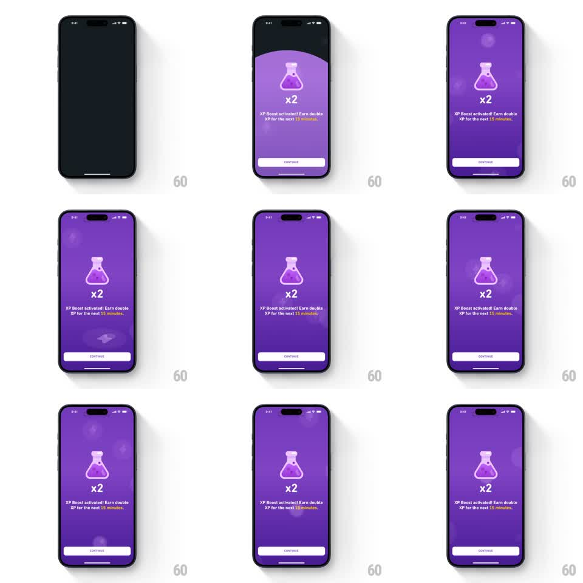

Media
Frame-by-frame

Rebuild this animation 1:1: Duolingo's XP Boost activation screen - a full-screen purple takeover where the x2 potion illustration springs up from below with overshoot, soft bokeh particles drift upward behind it, and the activation copy + CONTINUE button settle in.

Rebuild this animation 1:1: Duolingo's XP Boost activation screen - a full-screen purple takeover where the x2 potion illustration springs up from below with overshoot, soft bokeh particles drift upward behind it, and the activation copy + CONTINUE button settle in. ## Integration Integration: stack-agnostic spec - springs given as stiffness/damping, timed motions as duration + curve; map every value to your framework and animation library of choice. ## Scene Full-screen purple (Duolingo's brand purple, subtle radial vignette). Center: x2 potion flask illustration. Below: "XP Boost activated! Earn double XP for the next 15 minutes." with the time span highlighted. CONTINUE button pinned to the bottom safe area. ## Motion spec Pattern: reward entrance + ambient loop. - Background fades from black to purple (300ms). - Potion springs in from below center (translateY 80 -> 0, scale 0.6 -> 1, spring ~260/16, visible overshoot, ~600ms). - Copy block fades up 150ms after the potion starts; the "15 minutes" highlight colors in with a short wipe (200ms). - CONTINUE slides up (300ms, ease-out) last. - Ambient loop: translucent bokeh circles (6-10, sizes 20-60px, white/pink, low opacity) drift slowly upward across the screen (10-16s per pass, staggered, wrap-around); the potion breathes (scale +-2%, 3s). ## Calibration - The potion's overshoot is the reward moment - let it visibly bounce once. - Bokeh is background texture: never sharper than 60% opacity, never fast. ## Reduced motion Elements fade into place (300ms); bokeh frozen. ## Don't miss - The vignette darkens the edges - the potion sits in a pool of light. - Highlight wipe on the time span, not the whole sentence.